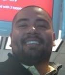
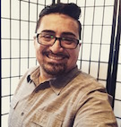
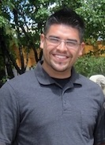
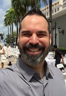
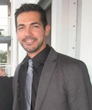

Directory of NCIEC Trainers
|
Leonardo A. Álvarez, M.A.Ed., NIC Bronx, New York iterpnyc@gmail.com Leonardo A. Álvarez is the president of New York City Trilingual Interpreters, Inc. He is nationally certified by the Registry of Interpreters for the Deaf and his career spans 20 years, nationally and internationally in the fields of foreign language acquisition of English and Spanish; K-12 education; and ASL/English/Spanish interpretation. He currently works in New York City as a freelance trilingual interpreter and interpreter educator. |
|
Esteban Amaro Jr., B.A., BEI-Trilingual Advanced, RID-NIC, EIPA Chicago, IL eamaro09@gmail.com 
Esteban Amaro Jr. is a native of Chicago, IL and is a proud COMA (Child of Mexican Adults). In 2005, Esteban graduated from Columbia College Chicago with a B.A. in ASL-English Interpretation. In addition to sign language certification, Estaban has also been awarded with Certificates in Simultaneous Interpretation from English to Spanish and Spanish to English from the University of Hawai’i at Mānoa. Esteban works as a freelance interpreter in the Chicagoland area. He has presented Trilingual workshops and has lectured on the Latino Culture locally. He is a member of Mano a Mano’s Translation Committee and serves as Illinois Mano a Mano’s secretary. |
|
Juan Bernal Berwyn, IL mrjuanbernal@outlock.com 
Juan Bernal is extremely involved in the local Chicago National Deaf and International Deaf Communities. As a Deaf multilingual ASL Interpreter, he serves as the RID Region III Deaf Caucas Representative and VP of the Illinois Latino Association. Juan Bernal is also the winner of the Deaf Illinois Award 2013 and currently the holder of the Best Deaf Activist. He has modeled ASL for several different Deaf Outreach videos for various hospitals. Juan possesses ASL Mentor certification, and he has worked as a Deaf Interpreter for the last 15 years. He has earned IDHHC Intermediate License, and he is currently working to obtain the Advanced License. In addition to his current full time position, he travels to present interpreter workshops on several topics, including interpreter test preparation, Deaf Interpreting, LSM (Mexican Sign Language), team interpreting with a Deaf interpreter, Latino Deaf Issues, cultural issues, interpreting for DeafBlind individuals, Expressions/Non-manuals, and more. |
|
Masanda A. Boyd, B.S., NIC Master, RID New York, NY masandaboyd@gmail.com Masanda A. Boyd has over 20 years of experience as an interpreter and interpreter educator, both nationally and internationally. He currently resides in New York City and works as a trilingual Medical/Mental Health interpreter. |
|
Edwin Cancel, M.S., NIC, EIPA Ed K-12, BEI Trilingual Master Bend, OR edwcancel@gmail.com Edwin Cancel is a trainer and VRS Trilingual Interpreter with Global VRS and ASL Latino. He is a former interpreter trainer at Western Oregon University and Portland Community College. He holds a Master’s in Deaf Studies/Deaf Education from Lamar University. He has worked in K-12 and various post-secondary environments in which Spanish plays a role in the interpreting dynamics. As part of his professional contributions, Edwin serves as a member of the National Task Force on Trilingual interpreting with the National Consortium of Interpreter Education Centers and has trained VRS interpreters in Puerto Rico and Florida. |
|
Ana C. Hernandez, RID Miami, FL achernan@bellsouth.net Ana Hernandez grew up in Miami, Florida where she has worked with the Deaf Community in trilingual settings for over 15 years, gaining extensive experience as a trilingual video interpreter. Ana currently serves as Coordinator of Deaf Services at Miami-Dade College’s Wolfson Campus and is an adjunct professor in MDC’s Sign Language Interpretation Program. |
|
Gloria Herrera, A.A.S., B.A. NIC Naperville, IL Gollin41@yahoo.com Gloria Herrera was born in Durango, Mexico. She came to The United States at the age of 18 and immediately enrolled in a community college to learn English. She continued her education in Chicago, which was postponed when she got married and became a mother. She then moved to Texas to resume her education where she enrolled in a community college IPP and graduated in 1998 with an A.A.S. in Sign Language preparation. In 2002, she received a B.S. in Business/Information Systems from the University of Phoenix (UOP). That same year she moved back to Chicago where she has since been working as a freelance interpreter. In 2011 she received her National Interpreter Certification (NIC). She also works as a medical interpreter at a local hospital and as a video interpreter/trilingual video interpreter at a VRS company. She enjoys reading, dancing Zumba, and spending time with her children. |
|
Caleb Lopez, B.A., RID K-12 Rancho Cordova, CA Calito7013@gmail.com Caleb López is a professional, multilingual interpreter and native Spanish speaker. He has worked as a sign language interpreter in the Sacramento, CA area for several years and worked in his native country, Colombia, as a sign language interpreter, as well. Caleb is the Region 5 Representative of Mano a Mano and has been a tireless advocate of trilingual interpreting professional development since he moved to the U.S. |
|
Claudia Mansilla, NAD-RID NIC Santa Fe, NM mansillacd@gmail.com Claudia Mansilla was born and raised in Lima, Peru. As an immigrant and a native Spanish speaker, she experienced firsthand the communication barrier when she arrived to this country and is aware of the encumbrances this represents. Therefore, it is very important to her to support people who go through this battle. Communication is not just key for the social realm, but also for job opportunities and better living conditions. It is Claudia’s desire to support both the Spanish speaking and Deaf communities, but her passion emerges when both of these two communities mesh together. In order to support the community, there must be support to the interpreters who work within it; since she obtained her ASL/English Interpretationdegree at the University of North Florida, she has focused on providing support to her trilingual interpreter colleagues in New Mexico. Currently, she serves as the vice-president for a new local Mano a Mano chapter, New Mexico Mano a Mano. |
|
Nora McAllister, A.S., BEI 1, BEI Trilingual Advanced Weslaco, TX noramcallister@outlook.com Nora McAllister is President of the Texas Society of Interpreters for the Deaf (TSID), 2013-2015. Nora currently resides in Weslaco, Texas and is a native of the Rio Grande Valley. She has been working as a trilingual interpreter (ASL, Spoken Spanish, Spoken English) for over 20 years and actively participates in trilingual trainings and workshops. She has been employed at South Texas College as a sign language interpreter for over 15 years where she has been involved with the Interpreter Training Advisory Committee, as well as mentoring interpreting students. Nora is passionate about interpreting and teaching sign language in the community. Besides interpreting in a wide array genre, she works with diverse populations and cultivates inclusion through community involvement, such as teaching music, organizing various children’s programs, volunteering at the local prison, and managing a seminary. |
|
Paola Morales Philadelphia, PA moeabdul2@yahoo.com Paola Morales is a Deaf Parented/Coda Sign Language Interpreter of Color with a private practice that follows an Integrated Model of Interpreting. She hails from California, and has more than a fifteen years of professional experience within academia, and public and private sectors. She provides multilingual interpreting services in ASL, English, Spanish, and LSM. She has served in the different capacities within the field as a committee member, mentor, workshop presenter and facilitator, and sign language interpreting coordinator and liaison within the U.S and abroad. She has previously served on the NCIEC National Task Force on ASL/English/Spanish Trilingual Sign Language Interpreting. At the 2013 Registry of Interpreters of the Deaf Conference she was a panelist for the Community Forum entitled “Conversations Today, Shaping Tomorrow.” Her specializations include Mental Health Interpreting, Trilingual Interpreting, and Interpreting for the Performing Arts. Currently, she serves on the 2015-2017 RID Diversity Council. She holds a B.A. from UCSC. |
|
Arlene Narváez, B.S, RID CI, CT. Los Angeles, CA arlene_narvaez@hotmail.com  Arlene Narváez works as a trilingual (ASL/Spanish/English) interpreter in community and video settings with experience in both VRS and VRI. She has presented workshops at the regional and national level. In addition to working as an evaluator and interpreter trainer, she previously served as Co-Chair for the Southern California RID Trilingual Committee. She participated in the development of the NCIEC Interpreting in Spanish-Influenced Settings Curriculum and is a member of the NCIEC Trilingual Task Force. |
|
Orlando Obeso Albuquerque, NM orlando.obeso1@gmail.com 
Orlando Obeso, a native New Mexican, and first generation American, grew up in Roswell, New Mexico in a Spanish-speaking household. His parents, a Chihuahuense mother and Sinaloense father, spoke only Spanish in the home and as a result, raised 3 native Spanish-speakers, who at an early age became fluent bilinguals of Spanish and English. Orlando went on to graduate from the University of New Mexico in 2012 with a B.A. in Linguistics and B.S. in Sign Language Interpreting. Since then, he has worked as a community freelance interpreter, a trilingual VRS interpreter, and currently works at the New Mexico School for the Deaf as 1 of 4 trilingual staff interpreters. He has had the opportunity to work internationally and experience interpreting abroad, an experience that has sparked a deeper passion for trilingual interpreting and exploring the diverse cultures of Latin America. Orlando currently serves as the treasurer for the local Mano a Mano chapter; New Mexico Mano a Mano. He hopes to improve services for Deaf and Spanish-speaking communities through the development of trilingual interpreters by providing educational opportunities that foster professional and personal growth. |
|
Ricardo I. Ortiz Román, MAI, NIC Puyallup, WA r.ortiz.terp@gmail.com 
I. Ortiz-Román, MAI, NIC – is a trilingual (ASL-Spanish-English) interpreter born and raised in Ponce, Puerto Rico. In 1996, he graduated from the University of Puerto Rico – Mayagüez Campus with a Bachelor of Science in Biology. Encourage by his Deaf friends, Ricardo switched professions to sign language interpretation in 2001, working between ASL and Spanish. He incorporated English progressively, achieving his NIC certification in 2010. He has been a VRS interpreter since 2006 where the demand for trilingual work was higher, serving consumers from the US and Latin America from diverse cultural and linguistic backgrounds. Ricardo has also been conference interpreter nationally and internationally. Between the years 2007 and 2011 he served as the PRRID chapter’s president. In 2014, he obtained his MA in Interpretation from Gallaudet University. His MAI research topic was Language errors of trilingual interpreters when working from ASL into their L2 Spanish or L2 English. Ricardo currently completed his second year as a PhD student in Interpretation Studies: Pedagogy and Research Combined Track from the same institution. His current research interests include multilingual-multicultural settings; trilingual (ASL-Spanish-English) settings; Socio-Cultural, Psychological and Cognitive aspects of interpreting. He is currently conducting a research on The effects of cognates on trilingual (ASL-Spanish-English) interpreters. |
|
Rachel Postovoit, LCSW, M.S. San Diego, CA postovoit.rach@gmail.com Rachel’s love for languages stems from her paternal grandparents hertiage, one from Russian and one from Brasil. Rachel is self-taught and has been learning since she was in her teens. Rachel’s love of languages has been infused in her personal and professional life from various sign languages to various written languages. She previously held a position with RID. That experience cause her to gravitate toward learning various sign languages when traveling abroad. She has had a long-standing “informal” Deaf interpreter role in both informal and formal professional settings. Previously, Rachel worked in L.A. as a mental health counselor in home settings working with various cultures including latinx families in trilingual settings. Most recently, she has worked extensively as a freelance Deaf interpreter in San Diego. Her passion is to continue learning both written Spanish and LSM and supporting and advancing other CDI/ trilingual/CODA interpreters with their cultural and linguistic skill set, especially supporting the latinx community with their needs and having their voices heard. In particular, she is interested in having the Deaf latinx voice be visible, heard,, and respected. |
|
Buck Tomas Rogers Puyallup, WA buck.t.rogers@gmail.com ASL teacher, Certified Deaf Interpreter with SC:L certificate, superior SCPI rating, BA in French and mathematics, MA in French and Spanish, now working on a doctoral project with focus on teaching ASL and interpreting. Intern at French Deaf institute, 240 hours formal training at French Sign Language Academy (ALSF), 40 hours of Spanish Sign Language with Spanish national Deaf theater, El Grito. Taught French using LSF and Spanish using LSE at Gallaudet University. Over 100 hours of tri- and quadrilingual interpreting. 20-year researcher in American Sign Language etymology. |
|
Jorge Santiago O’Neill, M.A., RID-NIC Carolina, PR turiterp@gmail.com Jorge Santiago O’Neill is a native of Puerto Rico. He specializes in VRS and stage interpreting, especially in theatre. He has been an ASL Instructor/Interpreter Trainer for the past 6 years and is currently a full-time trilingual interpreter for a VRS provider. Has an A.A. in Hospitality Management, a B.A. in Cultural Tourism from the University of Puerto Rico, and a M.A. in Public Relations from the Sacred Heart University in Puerto Rico. He is fluent in Spanish, English, ASL, and French. Jorge is also awaiting the results of the BEI Trilingual Certification. |
|
Rafael Treviño, RID-NIC Advanced Riverside, CA rtrevino@mdc.edu 
Rafael Treviño is a native of Florida and the Program Coordinator of the Sign Language Interpretation program at Miami Dade College. In addition, he is certified as a Spanish-English interpreter by the Florida Court Interpreter Certification Board and as a trilingual interpreter by the Texas Board for Evaluation of Interpreters (Trilingual Master). His goal is to help foster a new generation of leaders in the interpreting community. |